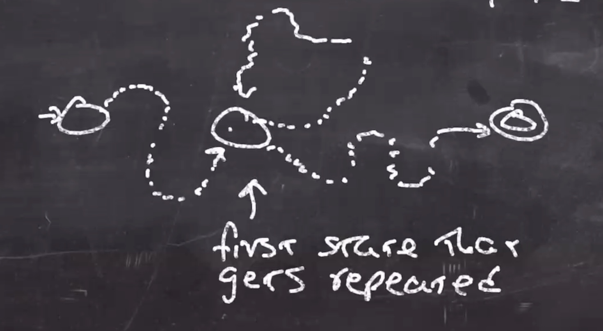
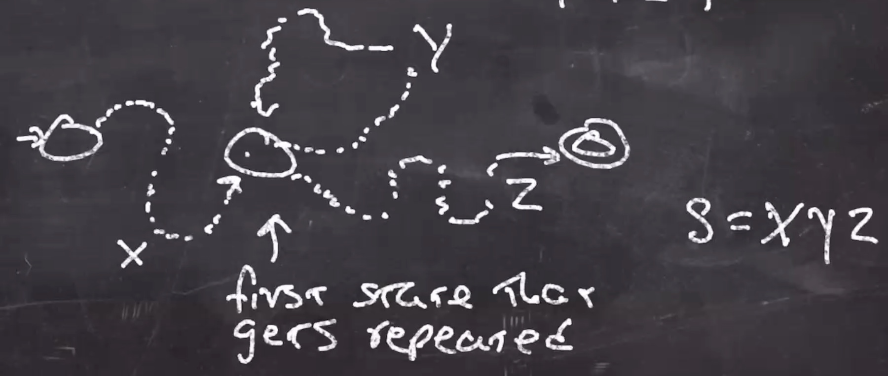

How to show what a finite atomata can't do
Pumping Lemma for regular languages
Let M be a DFA with p states.
Let s∈L(M), and |s|≥p, "the length of s is greater than or equal to the number of states."
At one point we reach a state that is going to be visited twice first, we can call this "the first state that gets repeated."
At one point we get back to this state.

The part of the string that takes us to the twice-visited state can be called x, the second part that returns to the twice-visited state can be called y, and the rest that goes to the accept can be called z.

So, s=xyz.
Observe,
- |xy|≤p, the length of x and y is less than the amount of states. We can't avoid a repeat longer.
- |y|>0, the length of y is not empty.
- xyiz∈L(m), for all i≥0. We can traverse the y string as many times, and as long as its followed by z it'll take us to an accept state.
A theorem for pumping lemma for regular languages
If L is a regular language, then there is a positive integer p such that any string s∈L and has length |s|≥p, can be broken into s=xyz where
|y|>0|xy|≤pxyz∈L
Note: If you know s is in L and at least p long, you don’t get to pick xyz. You only get to claim they exist.
Languages that aren't regular
L={0n1n:0≤n≤3}.
This is a legal NFA, not a DFA though, so:
Since the DFA recognizes this language, it proves that its a regular language.
If n doesn't have an upper limit, i.e. L={0n1n:0≤n} then we cannot say that this is a regular language. Finite state machines cannot do unbounded counting.
Proof template
Theorem: L is not regular.
Proof:
For purposes of contradicition assume L is regular.
Because L is regular there must be a pumping length p.
Consider the string ???? which is in L.
The pumping lemma says there exists xyz=???? where |xy|≤p,|y|>0, and xyiz is in L for all i≥0. (argue that xy or xyz is not a string in L).
This contradicts that the pumping lemma says (xy or xyyz) is in L.
You must pick a string to replace the ????.
A hint that often works: pick your string so that the first p chars are all the same.
So in our language L={0n1n∣n≥0}
Theorem: L is not regular.
Proof:
For purposes of contradicition assume L is regular.
Because L is regular there must be a pumping length p.
Consider the string 0p1p which is in L.
The pumping lemma says there exists xyz=0p1p where |xy|≤p,|y|>0, and xyiz is in L for all i≥0.
Because |xy|≤p, x and y are all 0s.
Because |y|>0, xyyz will have more 0s than 1s, and so is not in L.
This contradicts that the pumping lemma says xyyz is in L.